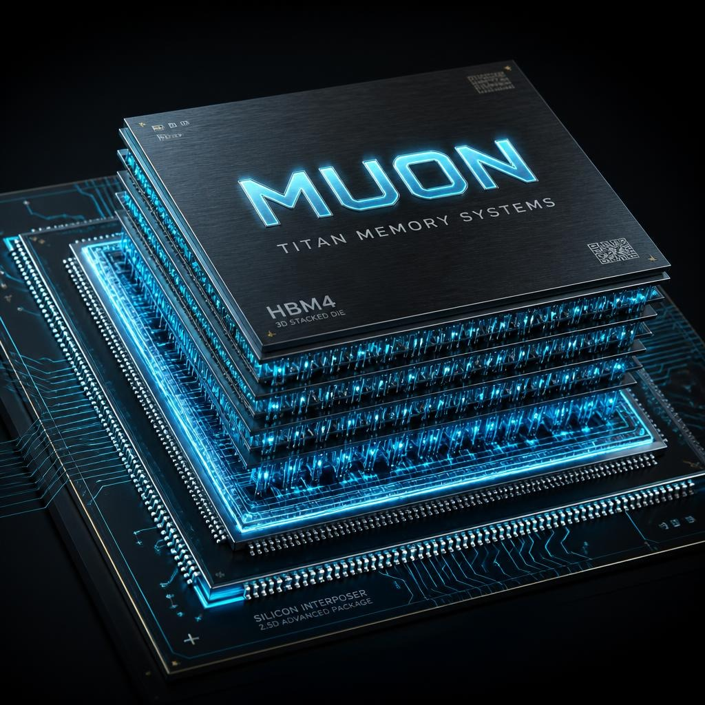

Engineered by Titan Memory Systems. A proprietary 3D-stacked HBM4 logic base-die microarchitecture designed to eliminate the AI memory latency wall. Featuring hardware refresh preemption in < 2ns and 2.048+ TB/s per-stack bandwidth.

Designed for 3D heterogeneous integration with TSMC CoWoS-S/L and emerging hybrid bonding PDKs.
Intercepts JEDEC background scrubbing (`tRFC`) via Beat-0 priority tag inspection. Preempts active DRAM refresh cycles in < 2ns to guarantee deterministic access for critical LLM attention reads.
Dynamic 128-entry reorder buffer scans completed DRAM bank payloads and commits high-priority token transactions ahead of pending low-priority bulk transfers, eliminating head-of-line blocking.
Transmits memory payloads in fine-grained 256-byte micro-flits. Early address and priority headers fire on Beat 0, initiating DRAM row activation while remaining beats are still in transit.
Simulate memory latency behavior under dynamic DRAM refresh collisions and workload priorities.
Comparison vs. Standard JEDEC JESD270-4 HBM4 Baselines
The Titan Memory Systems repository includes synthesizable SystemVerilog RTL, Verilator testbenches, OpenLane configuration for SkyWater 130nm (`sky130A`), and synthesized netlist.
Interested in co-designing or licensing the Muon HBM4 Series IP core for your AI accelerator or data center ASIC?